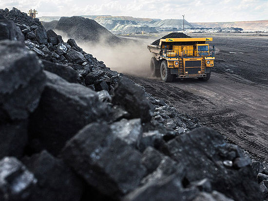
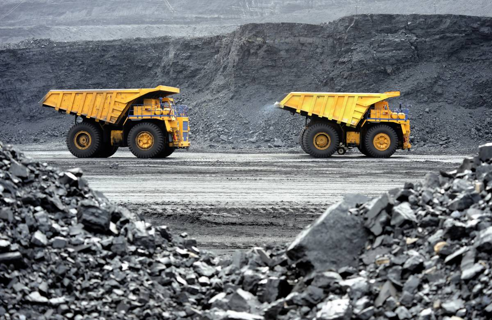

«Мечел» объединяет более 20 промышленных предприятий. Это производители угля, железной руды, стали, проката, ферросплавов, тепловой и электрической энергии.
Все предприятия работают в единой производственной цепочке: от добычи сырья до продукции с высокой добавленной стоимостью.
О компании
В состав холдинга также входят три торговых порта, собственные транспортные операторы, сбытовые и сервисные сети. Продукция «Мечела» реализуется на российском и зарубежных рынках.

Наша история
19 марта 2003 года в рамках работы по подготовке к IPO зарегистрирована управляющая компания ОАО «Мечел», на баланс которой переведены все производственные активы.
Именно от этой даты ведется официальный отсчет истории «Мечела». Компания стала одним из первых в России холдингов, объединивших активы металлургических и угольных предприятий.
Создание «Мечела» – результат давних партнерских отношений, связывающих активы, вошедшие в холдинг. Кооперация угольного, горнодобывающего, метизного и металлургического
производств позволила компании консолидировать ресурсы и производственные мощности, минимизировать зависимость от внешних поставок сырья и рыночную устойчивость.
Именно это заложило будущий успех «Мечела».

Именно от этой даты ведется официальный отсчет истории «Мечела». Компания стала одним из первых в России холдингов, объединивших активы металлургических и угольных предприятий.
Создание «Мечела» – результат давних партнерских отношений, связывающих активы, вошедшие в холдинг. Кооперация угольного, горнодобывающего, метизного и металлургического
производств позволила компании консолидировать ресурсы и производственные мощности, минимизировать зависимость от внешних поставок сырья и рыночную устойчивость.
Именно это заложило будущий успех «Мечела».